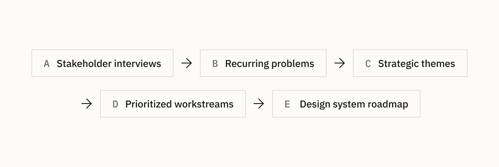

Cian · Research · Design-system strategy
Product analysis before starting work on the Design System
I interviewed the future clients of the design system, grouped recurring problems, evaluated possible responses, and converted the findings into a sequenced work plan.
Start with the people who would use the system
I asked the design manager for a list of colleagues who would become direct clients of the design system. I met each of them to understand what was missing in the product and the existing UI kits, and which components or styles they expected to need.
Around 30 designers, product managers, and developers took part. The work had three stages: collecting feedback, mapping possible solutions, and defining the work plan.

Seven recurring problem areas
- 10 mentions: lack of transparency when working with the design system;
- 7 mentions: insufficient flexibility and scalability;
- 6 mentions: layers of legacy components from different periods;
- 5 mentions: lack of component guidelines;
- 4 mentions: low accessibility;
- 3 mentions: poor synchronization between products;
- 2 mentions: insufficient platform nativity.
The frequency made priorities visible, while individual conversations exposed the different causes hiding behind similar complaints.
Turning feedback into practical choices
For transparency and documentation, I compared three operating models: developing Storybook as the primary source, keeping guidance mainly in Figma, or developing both together. Each option balanced discoverability, behavioral documentation, team context, and implementation cost differently.
Other findings translated into concrete system responses: a regular legacy-refactoring cadence, component guidance after the foundations stabilized, design tokens for product synchronization, and explicit exceptions where native platform patterns improved recognition.
Consistency did not mean making every platform identical; shared foundations needed room for justified native behavior.
A sequenced plan for the foundations
- Define design tokens and a 4 px dimensional unit.
- Synchronize typography with the dimensional system.
- Audit the type scale for missing contrast and roles.
- Introduce one color library across platforms.
- Extend style-code generation beyond web colors.
- Synchronize interface atoms with product modules.
- Document the parameters and principles of atoms.
- Document the parameters and principles of molecules.
- Implement and document organisms and their variants.
The 4 px unit offered enough precision for Cian’s dense interfaces while remaining compatible with common web, iOS, and Android dimensions.
Research became an operating plan
The analysis established a shared picture of the system’s problems before component work began. It connected user feedback to a practical sequence: foundations first, then synchronization and documentation, then more complex component structures.
This early alignment helped turn a broad request to “improve the design system” into explicit priorities that could be discussed with design leadership and implemented incrementally.